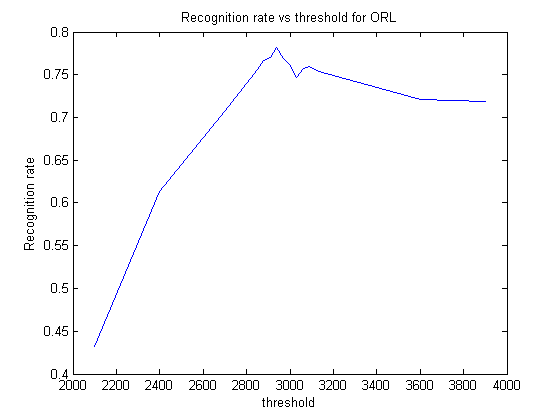

Contents
MyMainScript
tic;
Your code here
fname = uigetdir();
N = 35*5;
d = 112*92;
G=5;
X = zeros(d,N);
kArray = [1,2,3,5,10,20,30,50,75,100,125,150,170]';
kArraySize = size(kArray);
k = 150;
for i = 1:35
for j=1:G
address = strcat(fname,'/','att_faces/s',num2str(i),'/',num2str(j),'.pgm');
[src] = imread(address);
X(:,G*(i-1)+j) = reshape(src,[],1);
end
end
Xbar = mean(X')';
for i = 1:N
Xsub(:,i) = X(:,i) - Xbar;
end
L = Xsub'*Xsub;
[W,lam] = eig(L);
eigVec = normc(Xsub*W);
eigVeck = fliplr(eigVec(:,N-k+1:N));
alpha = eigVeck'*Xsub;
threshArray = 3000*[0.7,0.8,0.9,0.95,0.96,0.97,0.98,0.99,1.0,1.01,1.02,1.03,1.04,1.05,1.2,1.3]';
rate = zeros(size(threshArray));
for threshiter = 1:size(threshArray)
falsePositive = 0;
falseNegative = 0;
truePositive = 0;
trueNegative = 0;
for i = 1:40
for j = 1:10
if(i<36 && j < 6)
continue;
end
address2 = strcat(fname,'/','att_faces/s',num2str(i),'/',num2str(j),'.pgm');
[probe] = imread(address2);
probe = reshape (probe,[],1);
probe = double(probe) -Xbar;
alphaprobe = eigVeck'*probe;
temp = 0;
dist = 999999;
for p = 1:N
if(norm(alphaprobe - alpha(:,p)) < dist)
dist = norm(alphaprobe - alpha(:,p));
temp = ceil(p/5);
end
end
thresh = threshArray(threshiter);
if (dist < thresh && temp == i)
truePositive = truePositive + 1;
end
if(dist < thresh && temp ~=i)
falsePositive = falsePositive + 1;
end
if (dist >= thresh && temp == i)
falseNegative = falseNegative+1;
end
if (dist >= thresh && temp ~= i)
trueNegative = trueNegative +1;
end
end
end
rate(threshiter) = truePositive/(truePositive+falsePositive+falseNegative);
end
figure
plot(threshArray, rate),title('Recognition rate vs threshold for ORL'),axis on, xlabel('threshold'),ylabel('Recognition rate');
toc;
Elapsed time is 55.275202 seconds.
